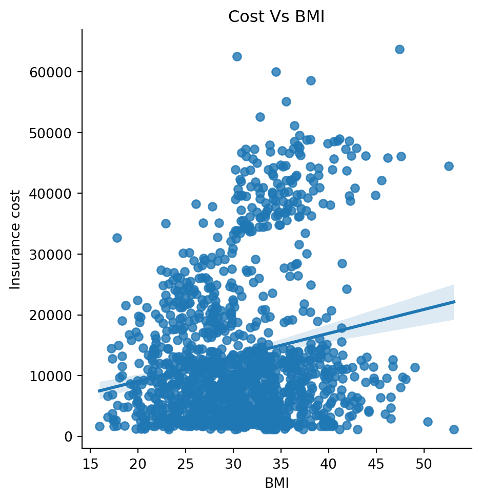
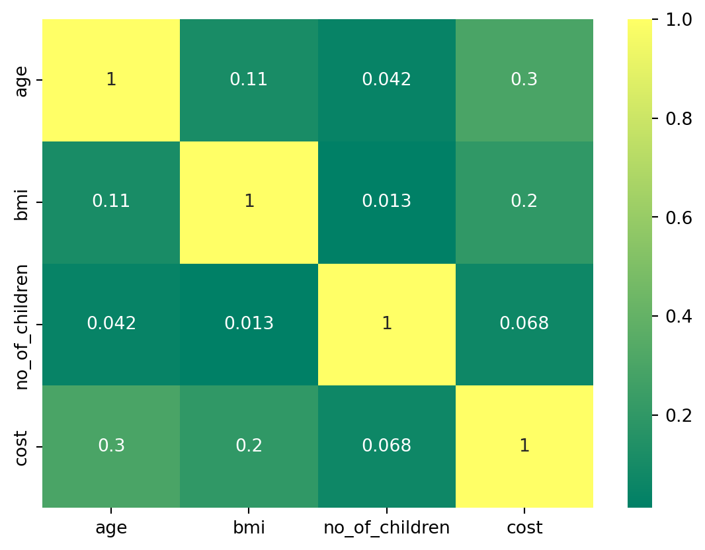
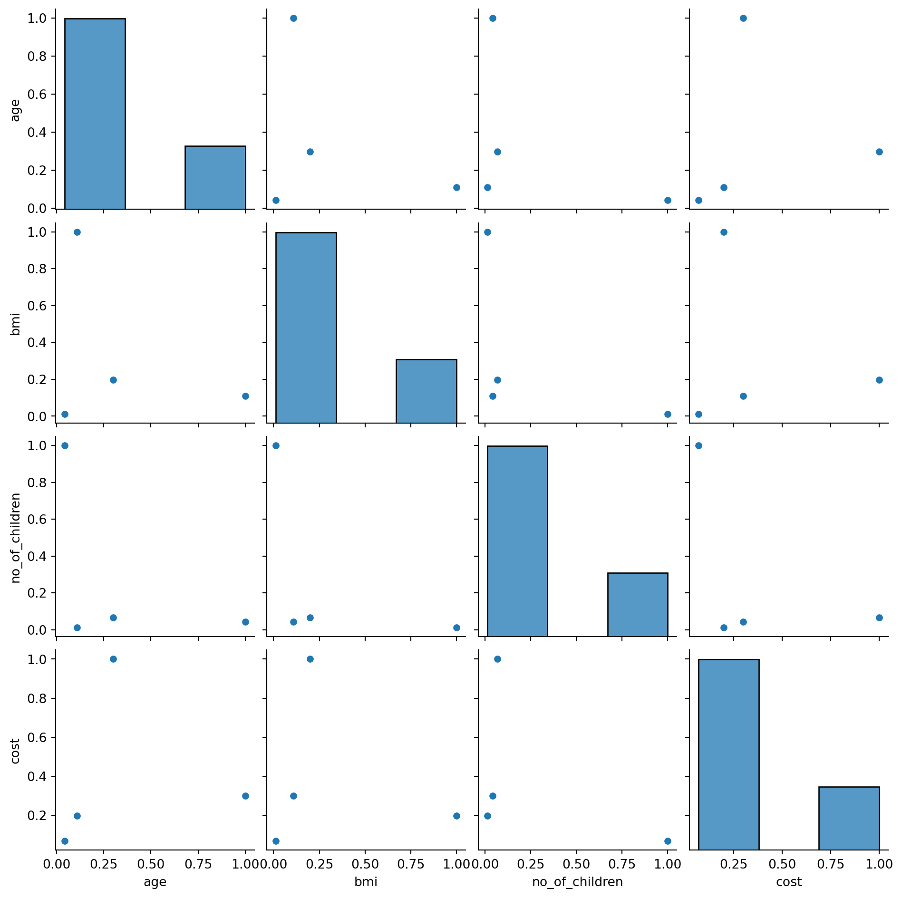
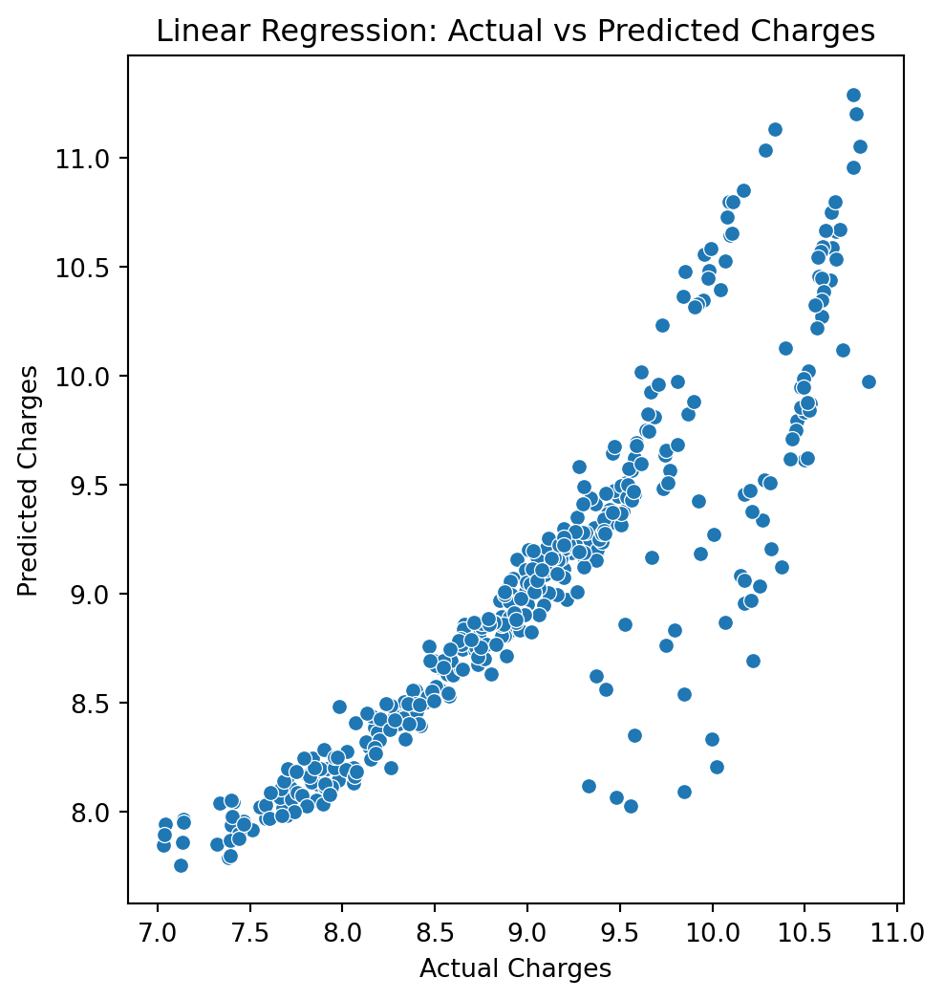
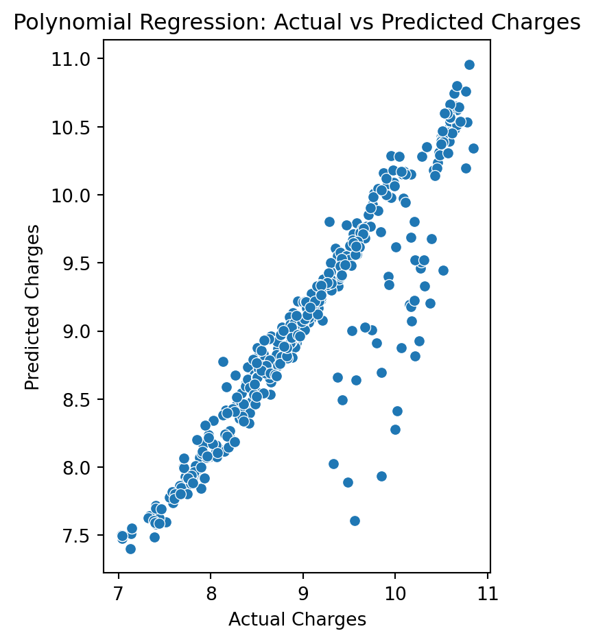
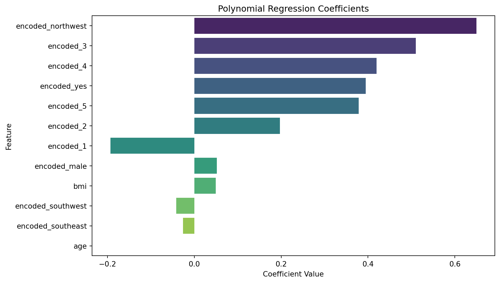

#importing the needed libraries
import pandas as pd
import numpy as np
import matplotlib.pyplot as plt
import seaborn as snsThis is a post with executable code.
#importing the dataset
data=pd.read_csv('insurance.csv',sep=',')
data.head()| age | sex | bmi | children | smoker | region | charges | |
|---|---|---|---|---|---|---|---|
| 0 | 19 | female | 27.900 | 0 | yes | southwest | 16884.92400 |
| 1 | 18 | male | 33.770 | 1 | no | southeast | 1725.55230 |
| 2 | 28 | male | 33.000 | 3 | no | southeast | 4449.46200 |
| 3 | 33 | male | 22.705 | 0 | no | northwest | 21984.47061 |
| 4 | 32 | male | 28.880 | 0 | no | northwest | 3866.85520 |
insurance=data[['age','bmi','children','charges']].copy()
insurance.columns=['age','bmi','no_of_children','cost']
insurance.head()| age | bmi | no_of_children | cost | |
|---|---|---|---|---|
| 0 | 19 | 27.900 | 0 | 16884.92400 |
| 1 | 18 | 33.770 | 1 | 1725.55230 |
| 2 | 28 | 33.000 | 3 | 4449.46200 |
| 3 | 33 | 22.705 | 0 | 21984.47061 |
| 4 | 32 | 28.880 | 0 | 3866.85520 |
sns.lmplot(x='bmi',y='cost',data=insurance)
plt.xlabel('BMI')
plt.ylabel('Insurance cost')
plt.title('Cost Vs BMI');C:\Users\mehra\anaconda3\Lib\site-packages\seaborn\axisgrid.py:118: UserWarning:
The figure layout has changed to tight

#checking the missing value
insurance.apply(pd.isnull).sum()age 0
bmi 0
no_of_children 0
cost 0
dtype: int64#let's see the correlation plot to identify how related are the features so that we know which features are important
# correlation plot
insurance = insurance.corr()
sns.heatmap(insurance, cmap = 'summer', annot= True);
# so we can see that there is no co-relation between the features,so let's check the pair plots
sns.pairplot(insurance)C:\Users\mehra\anaconda3\Lib\site-packages\seaborn\axisgrid.py:118: UserWarning:
The figure layout has changed to tight

# now let's preapare our data to be machine learning ready
#let's first do one-hot encoding
features_to_select=['sex','children', 'smoker', 'region']
insurance_encoded = pd.get_dummies(data = data, prefix = 'encoded', prefix_sep='_',
columns = features_to_select,
drop_first =True,
dtype='int8')insurance_encoded| age | bmi | charges | encoded_male | encoded_1 | encoded_2 | encoded_3 | encoded_4 | encoded_5 | encoded_yes | encoded_northwest | encoded_southeast | encoded_southwest | |
|---|---|---|---|---|---|---|---|---|---|---|---|---|---|
| 0 | 19 | 27.900 | 16884.92400 | 0 | 0 | 0 | 0 | 0 | 0 | 1 | 0 | 0 | 1 |
| 1 | 18 | 33.770 | 1725.55230 | 1 | 1 | 0 | 0 | 0 | 0 | 0 | 0 | 1 | 0 |
| 2 | 28 | 33.000 | 4449.46200 | 1 | 0 | 0 | 1 | 0 | 0 | 0 | 0 | 1 | 0 |
| 3 | 33 | 22.705 | 21984.47061 | 1 | 0 | 0 | 0 | 0 | 0 | 0 | 1 | 0 | 0 |
| 4 | 32 | 28.880 | 3866.85520 | 1 | 0 | 0 | 0 | 0 | 0 | 0 | 1 | 0 | 0 |
| ... | ... | ... | ... | ... | ... | ... | ... | ... | ... | ... | ... | ... | ... |
| 1333 | 50 | 30.970 | 10600.54830 | 1 | 0 | 0 | 1 | 0 | 0 | 0 | 1 | 0 | 0 |
| 1334 | 18 | 31.920 | 2205.98080 | 0 | 0 | 0 | 0 | 0 | 0 | 0 | 0 | 0 | 0 |
| 1335 | 18 | 36.850 | 1629.83350 | 0 | 0 | 0 | 0 | 0 | 0 | 0 | 0 | 1 | 0 |
| 1336 | 21 | 25.800 | 2007.94500 | 0 | 0 | 0 | 0 | 0 | 0 | 0 | 0 | 0 | 1 |
| 1337 | 61 | 29.070 | 29141.36030 | 0 | 0 | 0 | 0 | 0 | 0 | 1 | 1 | 0 | 0 |
1338 rows × 13 columns
insurance_encoded['charges'] = np.log(insurance_encoded['charges'])#let's now train our data
from sklearn.model_selection import train_test_split
X = insurance_encoded.drop('charges',axis=1)
y = insurance_encoded['charges']
X_train, X_test, y_train, y_test = train_test_split(X,y,test_size=0.3,random_state=23)#now let's perform a linear regression model:
from sklearn.linear_model import LinearRegression
from sklearn.metrics import mean_squared_error, r2_score
# Initialize the Linear Regression model
linear_model = LinearRegression()
# Fit the model on the training data
linear_model.fit(X_train, y_train)
# Make predictions on the test data
y_pred_linear = linear_model.predict(X_test)
# Evaluate the model
mse_linear = mean_squared_error(y_test, y_pred_linear)
r2_linear = r2_score(y_test, y_pred_linear)
print("Linear Regression Results:")
print(f"Mean Squared Error: {mse_linear}")
print(f"R-squared: {r2_linear}")Linear Regression Results:
Mean Squared Error: 0.18729622322981895
R-squared: 0.7795687545055319#I want to check either linear or non-linear model is best for this data so I also want to perform a non-linear regression model:
from sklearn.preprocessing import PolynomialFeatures
from sklearn.pipeline import make_pipeline
# Choose the degree of the polynomial
degree = 2 # You can experiment with different degrees
# Create a polynomial regression model
poly_model = make_pipeline(PolynomialFeatures(degree), LinearRegression())
# Fit the model on the training data
poly_model.fit(X_train, y_train)
# Make predictions on the test data
y_pred_poly = poly_model.predict(X_test)
# Evaluate the model
mse_poly = mean_squared_error(y_test, y_pred_poly)
r2_poly = r2_score(y_test, y_pred_poly)
print("\nPolynomial Regression Results:")
print(f"Mean Squared Error: {mse_poly}")
print(f"R-squared: {r2_poly}")
Polynomial Regression Results:
Mean Squared Error: 0.12727884942567
R-squared: 0.8502039452788253#Let's try to visualize both of them:
#For the linear regression data visualizsation:
# Plotting Linear Regression
plt.figure(figsize=(12, 6))
plt.subplot(1, 2, 1)
sns.scatterplot(x=y_test, y=y_pred_linear)
plt.title("Linear Regression: Actual vs Predicted Charges")
plt.xlabel("Actual Charges")
plt.ylabel("Predicted Charges")Text(0, 0.5, 'Predicted Charges')
# Plotting Polynomial Regression
plt.subplot(1, 2, 2)
sns.scatterplot(x=y_test, y=y_pred_poly)
plt.title("Polynomial Regression: Actual vs Predicted Charges")
plt.xlabel("Actual Charges")
plt.ylabel("Predicted Charges")
plt.tight_layout()
plt.show()
#In this case, the polynomial regression has a lower MSE and a higher R-squared,
# which indicates it fits the data better and explains more of the variance.# Accessing coefficients for Polynomial Regression
poly_coefficients = poly_model.named_steps['linearregression'].coef_
# Creating a DataFrame to display coefficients along with feature names
poly_coefficients_df = pd.DataFrame({
'Feature': X_train.columns,
'Coefficient': poly_coefficients[:len(X_train.columns)] # Only take coefficients corresponding to original features
})
# Displaying the coefficients
print(poly_coefficients_df) Feature Coefficient
0 age 1.023352e-13
1 bmi 4.964836e-02
2 encoded_male 5.215860e-02
3 encoded_1 -1.934427e-01
4 encoded_2 1.974225e-01
5 encoded_3 5.101884e-01
6 encoded_4 4.195310e-01
7 encoded_5 3.787017e-01
8 encoded_yes 3.949445e-01
9 encoded_northwest 6.499769e-01
10 encoded_southeast -2.585821e-02
11 encoded_southwest -4.188016e-02# Accessing coefficients for Polynomial Regression
poly_coefficients = poly_model.named_steps['linearregression'].coef_
# Creating a DataFrame to display coefficients along with feature names
poly_coefficients_df = pd.DataFrame({
'Feature': X_train.columns,
'Coefficient': poly_coefficients[:len(X_train.columns)] # Only take coefficients corresponding to original features
})
# Sort coefficients by absolute value for better visualization
poly_coefficients_df = poly_coefficients_df.reindex(
poly_coefficients_df['Coefficient'].abs().sort_values(ascending=False).index
)
# Create a bar plot
plt.figure(figsize=(10, 6))
sns.barplot(x='Coefficient', y='Feature', data=poly_coefficients_df, palette='viridis')
plt.title('Polynomial Regression Coefficients')
plt.xlabel('Coefficient Value')
plt.ylabel('Feature')
plt.show()
#Age: The coefficient is very close to zero, suggesting that age has a minimal impact on the predicted charges.
#BMI: The coefficient is positive, indicating that an increase in BMI is associated with higher predicted charges.
#Gender (encoded_male): The coefficient is positive, suggesting that being male is associated with higher predicted charges compared to being female.
#Children (encoded_1, encoded_2, encoded_3, encoded_4, encoded_5): These coefficients are negative, indicating that having more children is associated with lower predicted charges.
#Smoker (encoded_yes): The coefficient is positive suggesting that being a smoker is strongly associated with higher predicted charges.
#Region (encoded_northwest, encoded_southeast, encoded_southwest): These coefficients are positive, with the highest coefficient for ‘encoded_northwest’ indicating that individuals from the northwest region tend to have higher predicted charges.